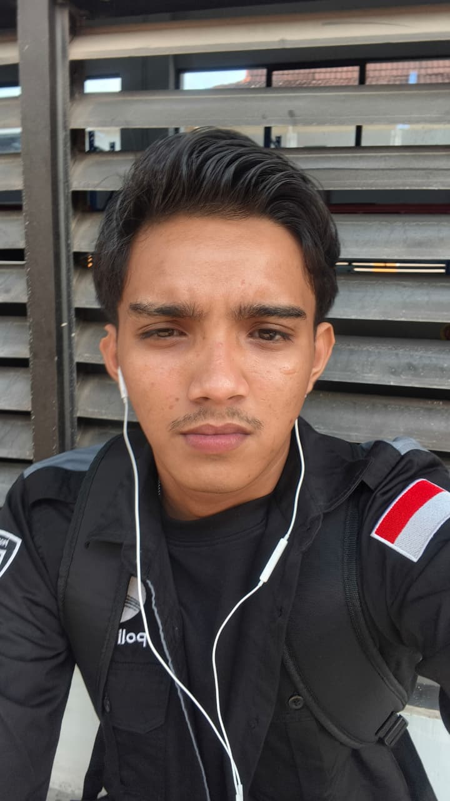

Ripasha Alvarisi
Lirawanda
Cyber Security Student · Politeknik Negeri Batam
Saya mahasiswa yang sedang menempuh pendidikan di bidang keamanan siber. Tertarik pada hak akses sistem, monitoring jaringan, dan pengamanan server — senang belajar lewat proyek nyata di kampus.

Saya lahir dan besar di Banda Aceh, Pada tahun 2025 bulan september saya melanjutkan pendidikanPerguruan tinggi saya di Politeknik Negeri Batam dengan mengambil jurusan teknik informatika prodi rekayasa keamanan siber.
Di kampus, saya mulai mendalami keamanan siber melalui proyek-proyek mata kuliah. Dari situ saya belajar bahwa keamanan bukan hanya soal menyerang, tapi juga merapikan sistem, mengatur hak akses, dan memantau aktivitas agar tetap aman.
- Dasar Keamanan
- Linux Dasar, Hak Akses File, Jaringan Dasar, Virtual Machine, Dasar Kriptografi
- Bahasa & Tools
- Python, Bash / Shell, VirtualBox, Wireshark, Nmap, Git & GitHub
- Sedang Belajar
- Internetworking, SOC, Web Fundamental, DevOps, Defender Internetworking Essentials
-
2025 — sekarang
Politeknik Negeri Batam
Mahasiswa program studi Cyber Security. Aktif mengerjakan proyek mata kuliah berbasis tim.
-
2024 — 2025
Asisten Barista, Coffee Shop
Bekerja selama 10 bulan. Belajar pelayanan, kerja tim, dan manajemen waktu.
-
2021 — 2024
SMA Negeri 4 Banda Aceh
Kegiatan Ekstrakurikuler: voli. Menjadi Anggota Pengurus Organisasi Siswa selama 2 periode.